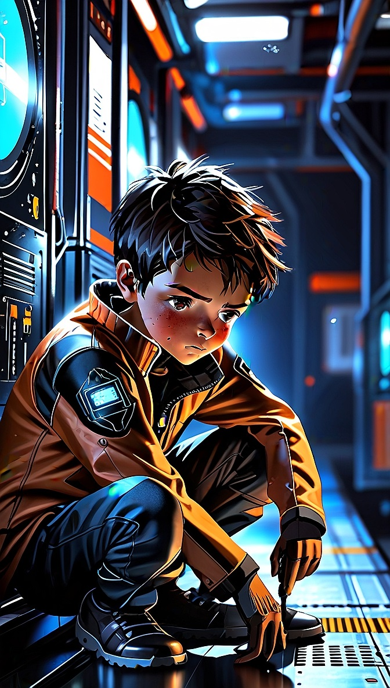
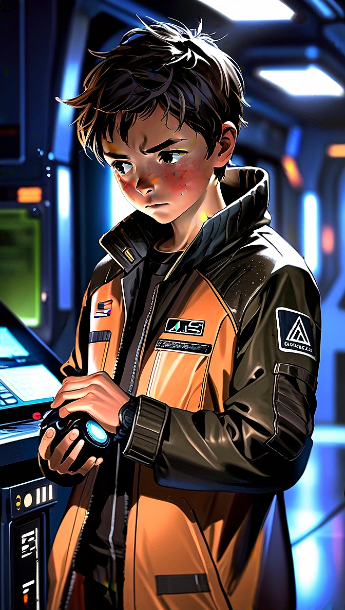
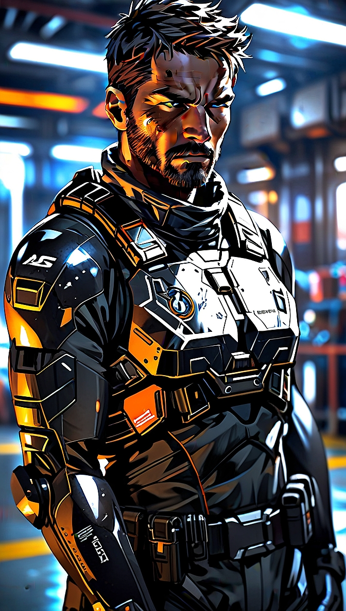
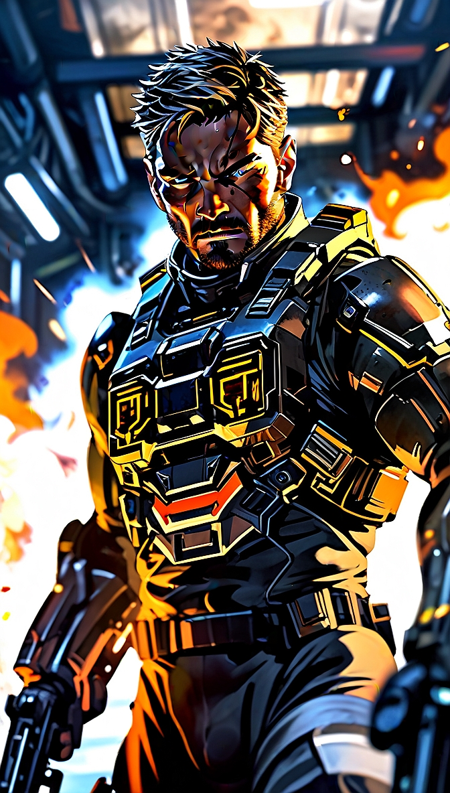

MEMBRI PHOENIX ELITE GROUP
DAGGER
Infanzia - ERA I

3286 - Dagger, Il prodigio solitario
Nato in una famiglia del ceto medio sotto il regno dell'Imperatore Hengist Duval, Dagger
dimostra fin dai primi anni di vita una mente fuori dal comune. Un vero e proprio
bambino prodigio, colleziona costantemente i massimi voti in ogni materia, mostrando una
capacità di apprendimento e analisi quasi disumana.
Tuttavia, a questa brillantezza accademica fa da contraltare una totale assenza di vita
sociale. Dagger non ha amici e non ne cerca: vive in una bolla di solitudine e studio,
evitando ogni contatto o legame con i propri coetanei.
Già in questa prima
fase della sua vita si delinea la sua natura profonda: quella di un'ombra, un'entità che
osserva il mondo senza mai farne davvero parte.
Adolescenza - ERA II

3290 - Dagger, Il fantasma di Achenar
Entrato all'Accademia Militare di Achenar in Ingegneria, si distingue tra i migliori
cadetti registrando un QI record. Vince così una prestigiosa borsa di studio con cui
accede ad Informatica, affinando le sue capacità fino a diventare un Net-Striker:
un'élite che unisce le abilità da hacker alla letalità di una truppa d'assalto.
A
soli 17 anni viene reclutato dai servizi segreti di Arissa Lavigny-Duval, operando per
un anno nelle missioni più delicate dell'Impero.
Per questo ruolo compie una scelta
radicale: cancella e rinuncia per sempre alla sua vera identità, sconosciuta persino ai
PEG.
Diventa a tutti gli effetti un fantasma, un concetto in cui si rispecchiava fin
da
piccolo, adottando il nome in codice Dagger.
Adulto - ERA III

3297 - Dagger, Il Net-Striker del PEG

3312 - Dagger e Codename: Tactical Takedown
Con la formazione del Phoenix Elite Group (PEG) sotto il comando di Zeltharian, Dagger
assume un ruolo cruciale nell'Impero: diventa il maestro dell'intelligence,
dell'infiltrazione e del sabotaggio per Arissa Lavigny-Duval. Operando nell'ombra, si
specializza nel penetrare nelle strutture nemiche senza lasciare alcuna traccia,
analizzando i punti deboli avversari grazie a un'intelligenza acuta per minare risorse
vitali con una precisione chirurgica e letale.
Nel 3300 partecipa alla pericolosa missione nella Casa Legacy di Achenar, la residenza
dell'Imperatore Hengist Duval. Insieme a Flora Flowers, Dagger sfrutta le sue doti
stealth e le sue abilità nelle manovre a bassa visibilità per neutralizzare le guardie
imperiali in totale silenzio, permettendo al team di sottrarre documenti segreti e
devastanti. Le prove di corruzione e i complotti raccolti accelerano la caduta
dell'Imperatore e spianano definitivamente la strada all'ascesa al trono di Arissa.
Nel gennaio del 3302, durante la guerra civile a Facece, agisce come l'agente più
inafferrabile del gruppo. Infiltrandosi tra le linee dell'Ordine Alleato, paralizza la
logistica dei ribelli dall'interno e raccoglie informazioni tattiche vitali che
permettono alle forze imperiali di riprendere i porti orbitali e liberare l'intero
sistema.
Nel 3305 compie un sabotaggio devastante a Stromgren Orbital, nel sistema Baal. Per
neutralizzare l'ascesa politica di Aisling Duval, Dagger si infiltra nei terminali di
sicurezza, disattiva i protocolli del Prismatic Shield e innesca un'esplosione
controllata durante la presentazione pubblica. Il disastro affonda l'immagine di Aisling
e permette ai PEG di trasformare Baal in una vera roccaforte imperiale.
Nel 3310, durante la riunione segreta a Oterma Station per eliminare le bande pirata dei
Brotherhood, Dagger assume il comando di una nave Python rinforzata, agendo con
freddezza come una clava implacabile per frantumare le difese nemiche. Nello stesso
anno, di fronte all'invasione Thargoid, appoggia con pragmatismo l'alleanza con
l'Anti-Xeno Initiative. Schierato sulla Fleet Carrier PEG Enterprise a Zeta Horologii,
mantiene l'ordine, evita il panico civile e previene il collasso interno dei sistemi
imperiali, confermandosi il pilastro invisibile e insostituibile dei PEG.